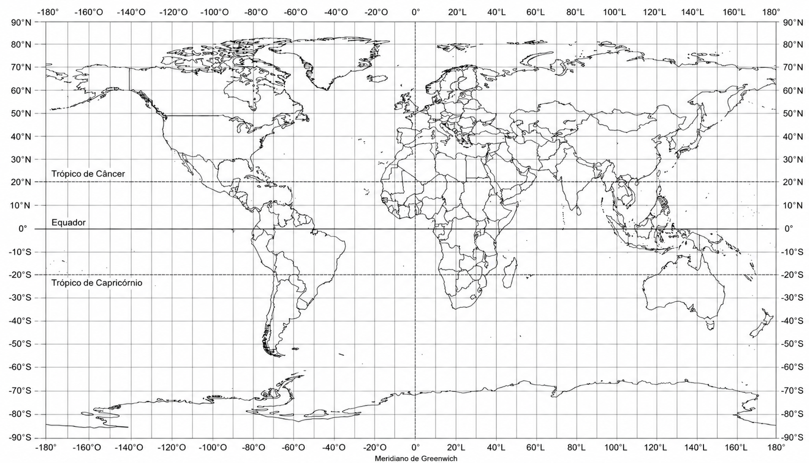

Desenvolvido para uso educativo livre · Professores de Geografia e História
⚙ Painel do Professor
0 pontos salvos
Como usar:
Clique em qualquer lugar do mapa para posicionar um ponto de jogo, ou digite as coordenadas manualmente. Depois preencha as perguntas e salve. Os pontos ficam salvos no navegador.
🖱 Clique no mapa para definir o ponto

?
📍 Definir Ponto
📌 Pergunta Geográfica (Quiz com 4 opções)
🏛 Pergunta Histórica (Quiz com 4 opções)
📤 Exportar / Importar Pontos
Salve seus pontos em arquivo JSON para compartilhar com outros professores ou usar em outros dispositivos.
⚓ Geo-História
RODADA1/10
AGUARDANDOVez de: –
🌍 Mapa-Múndi — Projeção Equirretangular
LAT: –LON: ––
Posição atual·Equador e Trópicos marcados no mapa·Tolerância: ±10° nas respostas